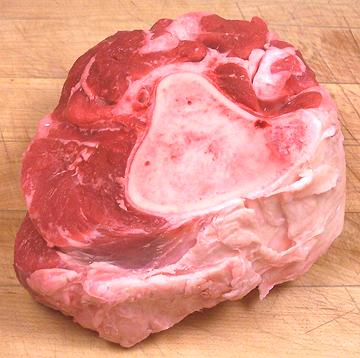

Beef Bones

Beef Bones can come from all parts of the beast, but those from the shank
(photo specimen) are particularly good because they include some of the
most flavorful meat and plenty of connective tissue. These are also very
easy for the butcher to cut up on his bandsaw. In any case, what you're
looking for is bones with some meat and tendons on them, and cut or
broken to expose marrow in the center.
More on Cuts of Beef
Buying:
Any meat market should be able to provide plenty
of beef soup bones. If they aren't on display ask the butcher. Most
markets will cut up large bones for you on the bandsaw. Be sure to
specify you want the bones for soup stock, not for your dog.
Prep:
Wash well to remove saw kerf residue and bone chips.
If large, you should split them into pieces. Always split lengthwise as
bone is very hard to split crosswise. Unless you have a lot of practice
swinging a meat cleaver, place the edge where you want the split and hit
the back of the cleaver with a heavy soft faced mallet. This will
minimize pieces of bone flying all over everywhere.
Cooking:
These are used to make very good beef stock. Beef
stock needs to be simmered a very long time, 8 hours is definitely not too
much. Put vegetables in for only the last hour.
ab_bonz 101010 - www.clovegarden.com
©Andrew Grygus - agryg@clovegarden.com - Photos on this
page not otherwise credited are © cg1 -
Linking to and non-commercial use of this page permitted